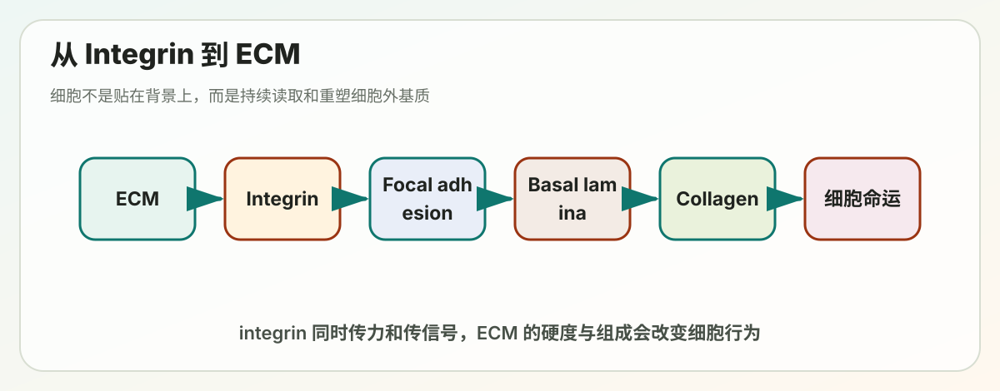

Lecture 18
Lecture 18: Cell Junctions, Cell Adhesion and Extracellular Matrix (II)

细胞连接、细胞粘附与细胞外基质（下篇）
> 本讲义覆盖 PPT 第 V–VII 章：整合素（Integrins）、基底层（Basal Lamina）、细胞外基质（ECM）。基础不好也没关系，每个概念都会从"是什么 → 为什么 → 怎么工作"三步讲。
---
📋 全章学习地图
细胞如何"粘"在一起或"粘"在基质上？
│
├── 细胞-细胞粘附 → Cadherin（钙黏蛋白）→ 已在上篇讲
│
└── 细胞-基质粘附 → Integrin（整合素）→ 本讲 V 章
│
↓
粘附的对象是什么？
│
┌───────────┴────────────┐
基底层 (Basal Lamina) 细胞外基质 (ECM)
上皮细胞下方薄层 结缔组织中的大网络
本讲 VI 章 本讲 VII 章一句话抓住核心：上皮细胞主要靠"细胞-细胞连接"互相抱团；结缔组织细胞（如成纤维细胞）则散布在自己分泌的 ECM 中，主要靠"细胞-基质连接"。Integrin 就是负责后者的"挂钩"。
---
第一部分：前情回顾（必须先理解的基础）
1.1 细胞连接的四大类型
| 类型 | 中文 | 功能 | 涉及的细胞骨架 |
|---|---|---|---|
| Tight junction | 紧密连接 | 封闭细胞间空隙（occluding） | —— |
| Adherens junction | 黏附连接 | 锚定相邻细胞的肌动蛋白（anchoring） | 肌动蛋白 actin |
| Desmosome | 桥粒 | 锚定相邻细胞的中间纤维（anchoring） | 中间纤维 IF |
| Gap junction | 间隙连接 | 形成通道，小分子通信（channel-forming） | —— |
| Hemidesmosome | 半桥粒 | 锚定细胞到基底层 | 中间纤维 IF |
| Focal adhesion | 焦点粘附 | 锚定细胞到 ECM | 肌动蛋白 actin |
后两者属于"细胞-基质锚定连接"——本讲的主角。
1.2 两类跨膜粘附蛋白
- Cadherin（钙黏蛋白）：细胞 ↔ 细胞 粘附
- Integrin（整合素）：细胞 ↔ 基质 粘附
两者都可以连接 actin 或中间纤维，看具体类型。
1.3 上皮组织 vs 结缔组织（一定要分清）
- 上皮组织（epithelial）：细胞紧密排列成片，靠细胞-细胞连接为主；下面垫着基底层
- 结缔组织（connective）：细胞散在大量 ECM 中（成纤维细胞、巨噬细胞等），ECM 直接承担机械应力
---
第二部分：V. 整合素 Integrins（重点章节）
2.1 整合素是什么？为什么重要？
定义：跨膜蛋白，由 α 亚基和 β 亚基组成的异二聚体（heterodimer），负责把细胞"挂"在细胞外基质上。
为什么叫"integrin"：integr- 表示"整合"，因为它整合了细胞外环境的信号和细胞内的细胞骨架——它既是结构连接者，也是信号传递者。
核心特点： 1. 是异二聚体（α + β 各一条） 2. 胞外端结合 ECM 蛋白（如纤连蛋白、层粘连蛋白、胶原） 3. 胞内端通过 talin、kindlin、vinculin 等接头蛋白连接到 actin 或中间纤维 4. 调控细胞功能（增殖、存活、迁移、分化） 5. 突变会导致多种遗传疾病
直观比喻：想象细胞是个站在钢丝上的杂技演员（PPT 上那张钢丝图就是这意思），整合素就是他脚下的"防滑钉鞋"，既能抓住钢丝（ECM），又能把脚部的肌肉力量（actin）传递给鞋底。
2.2 整合素的精细结构
ECM 蛋白 (如 fibronectin)
│
▼ N端 (头部)
┌──┴──┐
│ α │ β ← 两亚基在膜外形成头部，结合 ECM
│ │ │ │
═══│══│══│═│═══ 细胞膜
│ │ │ │
│ │ ← C端 (尾巴) 伸入胞质
│
talin ── vinculin
│ │
▼ ▼
kindlin actin filament关键胞内接头蛋白：
- Talin（踝蛋白）：直接结合 β 亚基胞内尾巴；激活整合素的关键
- Kindlin：另一个直接结合 β 尾的关键激活因子
- Vinculin（黏着斑蛋白）：连接 talin 和 actin
- 这些一起组成"焦点粘附复合物"
2.3 整合素缺陷与遗传疾病（考点）
PPT Table 19-3 必须记的几个：
| 整合素 | 配体 | 分布 | 突变后的表型 |
|---|---|---|---|
| α₅β₁ | Fibronectin（纤连蛋白） | 广泛 | 胚胎致死，血管/体节/神经嵴缺陷 |
| α₆β₁ | Laminin（层粘连蛋白） | 广泛 | 严重皮肤起疱 |
| α₇β₁ | Laminin | 肌肉 | 肌营养不良（muscular dystrophy） |
| α_Lβ₂ (LFA1) | ICAM1（Ig 超家族） | 白细胞 | 白细胞粘附缺陷 LAD，反复严重感染 |
| α_IIbβ₃ | Fibrinogen（纤维蛋白原） | 血小板 | Glanzmann 病：血小板不聚集，出血 |
| α₆β₄ | Laminin | 半桥粒（上皮） | 严重皮肤起疱 |
记忆窍门：
- β₁ 家族 = 通用粘附（除非提示别的）
- β₂ 家族 = 白细胞（免疫学常考）
- β₃ 家族 = 血小板/凝血
- β₄ = 半桥粒专属（链接中间纤维，不是 actin！）
2.4 整合素在半桥粒中的特殊地位
半桥粒的组成（PPT p.13）：
上皮细胞内
▲
│ keratin filament (中间纤维)
│
plectin / dystonin (接头蛋白，相当于 talin 的角色)
│
═══════│═════════════ 细胞膜
│
integrin α₆β₄ ←—— 横跨细胞膜
│
collagen XVII (BP180, 跨膜)
│
laminin (在基底层中)
│
（连到基底层下面的 collagen 网络）重点对比：
| 焦点粘附 (Focal adhesion) | 半桥粒 (Hemidesmosome) |
|---|---|
| 整合素连 actin | 整合素连 中间纤维 |
| 接头：talin、vinculin、kindlin | 接头：plectin、dystonin |
| 动态、可拆装 | 稳定的"焊点" |
| 用于细胞迁移、信号 | 用于上皮锚定到基底层 |
2.5 整合素与细胞迁移（5 步循环）
细胞像毛毛虫一样移动的 5 步：
1. Focal adhesions, attachment（焦点粘附，附着）：细胞已经粘在基质上 2. Extension（延伸）：前缘伸出片状伪足（lamellipodium）和丝状伪足（filopodia），靠 actin 在 plus end 聚合驱动 3. New attachment（新附着）：在前缘形成新的焦点粘附 4. Cell contraction（收缩）：myosin II 收缩，把胞体往前拉 5. De-adhesion（解粘附）：后部焦点粘附拆解；整合素被胞吞、回收到前缘 → 循环
关键点：整合素既要会"粘"，也要会"松"。一直粘住就走不了，松开了又掉下来。这就靠"激活/失活"两态切换。
2.6 整合素的"两种构象"
整合素是双稳态分子——可以在两种形状间切换：
| 状态 | 形状 | 结合能力 |
|---|---|---|
| Inactive（失活态） | 弯曲（bent），头部贴近膜 | 配体亲和力低，接头蛋白结合也弱 |
| Active（激活态） | 伸直（extended），头部翘起 | 强结合 ECM 配体 + 强结合胞内 talin |
PPT 上 ±RGD 的电镜图就是直接证据：加 RGD 肽（配体模拟物）后，整合素从蜷缩变成站立。
2.7 整合素激活的两种方向（核心考点）
这是整合素信号双向传递的精髓：
🟢 Outside-in activation（外向内激活）
触发：胞外 ECM 配体先结合到整合素头部 过程：
- 配体结合 → 构象变化 → 胞内尾巴分开
- talin、kindlin 招募过来 → 焦点粘附组装
- 激活下游：FAK、Src、PI3K、Rho-GTPase（Crk/HEF1/p130 等）
- 影响：actin 重组、细胞极性、迁移、收缩
作用：让细胞感知自己粘在了什么上，并调整内部状态
🟠 Inside-out activation（内向外激活）
触发：胞内信号（如 thrombin 激活的 Rap1-GTP） 过程（以血小板凝血为例）：
- 凝血酶 thrombin 结合受体 → Rap1·GDP → Rap1·GTP
- Rap1·GTP 招募 RIAM（一个接头蛋白）
- RIAM 把胞质中"折叠失活"的 talin 招到膜上 → talin 暴露 actin 结合域和整合素结合域
- talin 结合 β 整合素胞内尾巴 → 整合素从弯曲变伸直 → 胞外端高亲和力结合 fibrinogen
- 血小板互相粘连 → 血栓形成
作用：让细胞"决定"什么时候要变粘 —— 平时血小板不粘血管壁（避免不停长血栓），但凝血信号一来立即激活粘附功能
临床联系：α_IIbβ₃ 突变 → Glanzmann 血小板无力症，血小板不聚集，出血不止。
2.8 整合素的"聚集"形成焦点粘附
单个整合素的结合力其实很弱——比 cadherin 强不到哪去。但许多整合素聚集（cluster）在一起，就能形成强大的粘附点：焦点粘附（focal adhesion）。
焦点粘附的分层结构（PPT p.19，很重要）：
┌─────────────────────────────────┐
│ Actin regulatory layer │ ← 最上层：actin 调控与肌动机器
│ (myosin, actinin, …) │
├─────────────────────────────────┤
│ Actin linkage & force trans- │ ← 力传导层：vinculin, talin, paxillin, zyxin
│ duction (vinculin, talin…) │
├─────────────────────────────────┤
│ Intracellular signaling │ ← 信号层：FAK, paxillin
├─────────────────────────────────┤
│ 膜 │
├─────────────────────────────────┤
│ Matrix-receptor binding │ ← 受体层：integrin
│ (integrins + fibronectin) │
└─────────────────────────────────┘功能：力传导（mechanotransduction）+ 信号转导，二合一。
2.9 整合素信号控制细胞生死（必考实验）
经典实验（PPT p.20）：
- 把同样多的纤连蛋白涂成一个大斑或许多小斑
- 大斑：细胞只能粘一个点，几小时后凋亡
- 小斑：细胞能伸开、贴在多个点上，存活并增殖
结论： > 没有正确的 ECM 附着 → 细胞凋亡（anoikis） > 有附着 + 整合素信号被激活 → 存活、增殖
临床意义：肿瘤细胞往往能逃避 anoikis（不依赖锚定也能活），这是它们能转移的重要原因。
2.10 下游主要信号通路
FAK / Src 通路（PPT p.21, p.23）
- 整合素聚集 → FAK（focal adhesion kinase，焦点粘附激酶）自磷酸化
- 招募 Src 家族激酶 → 进一步磷酸化下游底物
- 双向影响：adhesion dynamics（粘附拆装）+ cell migration（迁移）+ survival/growth（存活与生长）
敲掉 FAK 的成纤维细胞：变成球形、不再迁移 —— 直接证明 FAK 对运动是必需的。
Rho-GTPase 通路（PPT p.22）
Rho-GTP（活化态）→ 两条腿走路：
腿 A：通过 Rho kinase (ROCK)
- ROCK 磷酸化 MLC（肌球蛋白轻链） → MLC(P)
- ROCK 还抑制 MLC phosphatase（让 MLC 持续磷酸化）
- ROCK 激活 LIM kinase → 抑制 cofilin → actin 不再切断
- 结果：myosin 活性↑，肌动蛋白稳定
腿 B：通过 formins
- 促进 actin 束的生长
两条腿汇合 → stress fibers ↑（应力纤维增多） → 整合素聚集、焦点粘附形成
> 一句话：Rho-GTPase 是焦点粘附 + 应力纤维的总开关。
---
第三部分：VI. 基底层 Basal Lamina
3.1 基底层是什么？
定义：一层薄薄（40–120 nm）的特殊细胞外基质，铺在上皮细胞下方，像"地毯"。
也叫什么：
- Basal lamina = basement membrane 的核心层
- 基底膜（basement membrane）= basal lamina（基底层）+ reticular lamina（网状层）
3.2 基底层出现在哪里？
不只是上皮下面！还有：
- 肌肉细胞周围：整圈包裹
- 上皮组织下方：经典位置
- 肾小球：作为血液-尿液间的关键过滤层
- 脂肪细胞、施万细胞（神经髓鞘形成细胞）周围：包裹这些细胞
3.3 基底层的功能（5 大类）
1. 机械屏障：固定细胞位置，分隔上皮和结缔组织 2. 再生指引模板（重要！）：组织受伤时细胞死了，基底层往往还在——它告诉新细胞"在哪里、长成什么样" 3. 机械支撑：薄但坚韧 4. 过滤器：肾小球的核心功能（滤血形成原尿） 5. 影响细胞极性、分化、迁移：通过整合素信号
经典实验：基底层引导组织再生（PPT p.30）
切断神经-肌肉接头处的肌肉和神经，让细胞退化死亡 → 只剩"残留的基底层壳"
- 再生的神经 → 回到原来的接头位置
- 再生的肌纤维 → 在原来位置形成新的乙酰胆碱受体簇
→ 说明基底层"记得"接头位置，是个模板。
3.4 基底层的组成（4 大主要成分 + 辅助）
4 个明星分子：
| 分子 | 类型 | 角色 |
|---|---|---|
| Laminin（层粘连蛋白） | 糖蛋白 | 主组织者（primary organizer） |
| Type IV collagen（IV 型胶原） | 纤维蛋白 | 第二骨架 |
| Nidogen（巢蛋白） | 糖蛋白 | 连接器，桥接 laminin 和 collagen IV |
| Perlecan（基底膜聚糖） | 蛋白聚糖 | 连接器 + 结构 + 过滤 |
3.4.1 Laminin（层粘连蛋白）
- 结构：3 条链（α、β、γ）通过二硫键结合的异三聚体
- 形状：像一朵十字花（PPT 上画成"花束"）
- 能力：可以通过头部域自组装形成网络（体外验证）
- 结合伙伴：integrins、dystroglycan（肌营养不良相关）、nidogen、perlecan
- 作用：把整个基底层"组织"起来 —— 没有 laminin 就没有基底层
3.4.2 Type IV Collagen（IV 型胶原）
- 与典型胶原的不同：不形成纤维（fibril），而形成片状网络（sheetlike network）
- 结构：3 条 α 链拧成绳状超螺旋，但有多个弯曲（不像 I 型胶原那么僵直）
- 末端域：NC1 hexamer 和 7S 域，用来互相头尾相连形成网络
- 突变后果：肾小球肾炎、耳聋（Alport 综合征）
3.4.3 整体结构模型（PPT p.35）
Laminin 网 ←→ Nidogen / Perlecan ←→ Type IV collagen 网
↑ ↑
└──── 都能结合 Integrin（细胞表面）─────┘Laminin 和 Collagen IV 各自形成网络 → Nidogen 和 Perlecan 作为连接器把两个网"钉"在一起 → 同时两个网都有 integrin 结合位点 → 把细胞固定在基底层上。
3.5 临床联系：表皮分离症（Epidermolysis bullosa）
PPT p.36 那张照片很触目惊心 —— 病人皮肤一碰就起大水泡。
机制：
- 表皮（epidermal cells）通过半桥粒（hemidesmosome）连到基底膜
- 基底膜下方靠 VII 型胶原作为"锚定纤维"（anchoring fibril）拉到真皮的胶原网
- 任何一个环节坏了 —— laminin、collagen VII、integrin α₆β₄、collagen XVII —— 都会导致表皮和真皮分离，形成大水泡（blister）
记忆：
- Junctional EB = 基底膜内部断裂（laminin、collagen XVII 突变）
- Dystrophic EB = 基底膜下方断裂（collagen VII 突变）
---
第四部分：VII. 细胞外基质 ECM（重头戏）
4.1 ECM 是什么？
比"基底层"更广义的概念 —— 任何细胞外的"填充物质"都属于 ECM。
多样性举例：
- 骨骼、牙齿（钙化的 ECM）
- 肌腱（致密的 I 型胶原）
- 角膜（透明的 ECM）
- 水母的"果冻"（含水极高的 ECM）
- 玻璃体液（眼睛里的）
所以 ECM 不只是"胶水"，它本身可以是组织的主要成分。
4.2 ECM 的多重功能（不只是支架）
┌─ 分化与生长 (Differentiation and growth)
├─ 形态发生 (Morphogenesis)
├─ 组织结构维持
├─ 损伤组织重塑
├─ 损伤与创伤反应
├─ 细胞存活与迁移
├─ 血管发生 (Angiogenesis)
└─ 结构修饰 (Structural modifications)ECM 不是被动支架，它是信号库：
- 释放因子（如 TGF-β）
- 储存生长因子
- 决定组织硬度（cancer 喜欢硬基质）
- 通过整合素影响细胞决定（生死、分化）
4.3 组织力学性质（PPT p.6）
不同组织的硬度（Young's modulus，杨氏模量）差异巨大：
| 组织 | 硬度 |
|---|---|
| 脑（brain） | 最软（~10² Pa） |
| 肝（liver） | 软 |
| 正常乳腺 | 中等 |
| 恶性乳腺癌 | 比正常硬很多 |
| 肌肉、皮肤 | 较硬 |
| 关节软骨 | 很硬（~10⁵ Pa） |
临床意义：临床上摸到"硬块"怀疑癌 —— 不只是感觉，确实癌组织 ECM 重塑后变硬。
4.4 力学概念（一次性搞懂）
- Stiffness（硬度）：拉/压时抵抗变形的能力（弹性模量）
- Stiffening / non-linear elasticity（非线性弹性）：拉得越多越硬（生物材料常见，橡皮筋则不是）
- Plasticity（塑性）：变形后不恢复（永久形变）
- Viscoelasticity（粘弹性）：既有弹性（恢复）又有粘性（耗散）→ 慢慢恢复
ECM 的精妙之处就在于同时具备这些特性，所以细胞能拉它、改它、留下痕迹。
4.5 ECM 谁来制造？
| 组织 | 主要制造细胞 |
|---|---|
| 大部分结缔组织 | 成纤维细胞 fibroblast |
| 骨 | 成骨细胞 osteoblast |
| 软骨 | 成软骨细胞 chondroblast |
记忆：-blast 后缀 = "造……者"
---
4.6 ECM 的三大类大分子（核心框架，必须记牢）
| 类别 | 中文 | 代表 | 特点 |
|---|---|---|---|
| Proteoglycans + GAGs | 蛋白聚糖 + 糖胺聚糖 | aggrecan、decorin、perlecan、syndecan、hyaluronan | 糖含量高（高达 95%）、强负电、形成凝胶 |
| Fibrous proteins | 纤维蛋白 | collagen、elastin | 纤维状、提供机械强度 |
| Non-collagen glycoproteins | 非胶原糖蛋白 | laminin、fibronectin、nidogen | 多功能，常作为黏附和组织"标记" |
> 这个三分法非常重要！ECM 后面所有内容都是在填这三个框。
---
4.7 GAGs（糖胺聚糖）—— ECM 的"海绵"
结构（PPT p.46）
- 重复二糖单元（disaccharide repeat）的未分支长链
- 每个二糖 = 氨基糖（如 N-乙酰葡糖胺或 N-乙酰半乳糖胺，常被硫酸化）+ 糖醛酸（葡糖醛酸/艾杜糖醛酸）
- 带大量负电（来自 -COO⁻ 和 -SO₃⁻）→ 高度亲水、形成凝胶
- 通常很长，例如肝素硫酸（heparan sulfate）
4 大类 GAG（要会区分）
| GAG | 关键特征 | 在哪里 |
|---|---|---|
| Hyaluronan（HA，透明质酸） | 没硫酸、不连蛋白、最长 | 关节液、皮肤、ECM 大空间填充 |
| Chondroitin sulfate / Dermatan sulfate | 硫酸化、连蛋白 | 软骨、皮肤 |
| Heparin / Heparan sulfate | 高度硫酸化、常作辅受体 | 细胞表面、基底层 |
| Keratan sulfate | 硫酸化 | 角膜、软骨 |
GAGs 的物理性质（为什么 ECM 能抗压）
- 负电 → 吸引 Na⁺ → 渗透压拉水进来 → GAGs 膨胀
- 膨胀的 GAGs 像凝胶垫 → 抗压缩（如关节软骨能承重）
- 同时胶原抗拉伸 → 两者搭档，ECM 又抗压又抗拉
> 想象一床棉被：GAGs 是棉花（蓬松，抗压），胶原是被套缝线（抗拉伸不破裂）。
---
4.8 透明质酸 Hyaluronan（HA）—— 最特殊的 GAG
为什么要单独讲：HA 跟其他 GAG 太不一样：
| 特征 | Hyaluronan | 其他 GAGs |
|---|---|---|
| 是否硫酸化 | 不 | 是 |
| 是否连接核心蛋白 | 不（自由游离） | 是（构成蛋白聚糖） |
| 合成位置 | 细胞膜表面酶直接合成挤出 | 高尔基体内合成，胞吐释放 |
| 长度 | 可达 25,000 个二糖重复，超长 | 较短 |
| 降解 | 透明质酸酶 hyaluronidase | 各类酶 |
功能：
- 空间填充剂（space filler）—— 占大体积
- 引导细胞迁移（如组织发生、伤口修复中胚胎细胞的"高速公路"）
- 化妆品中常见（保湿）—— 1 g HA 能结合数升水
---
4.9 蛋白聚糖 Proteoglycans
蛋白聚糖 vs 糖蛋白（这是常考的对比）
| 性质 | Proteoglycans（蛋白聚糖） | Glycoproteins（糖蛋白） |
|---|---|---|
| 糖比重 | 最高可达 95% | 1–60%（多数只占几个百分点） |
| 糖链类型 | GAGs（长、未分支） | 短、分支的寡糖 |
| 分子量 | 大（可达 3000 kD） | 一般小 |
| 例子 | aggrecan, decorin, perlecan, syndecan | 核糖核酸酶（ribonuclease）等 |
4.9.1 GAG 如何连到核心蛋白上（PPT p.51）
- 位置：高尔基体
- 方式：O-连接的四糖连接子（O-linked tetrasaccharide）
- 顺序：核心蛋白的丝氨酸 - O - 木糖 - 半乳糖 - 半乳糖 - 葡糖醛酸 - 然后开始延伸 GAG
- 后续修饰（硫酸化、表异构化等）
4.9.2 蛋白聚糖的功能（不止结构）
1. 选择性筛网（selective sieve）：根据孔径和电荷决定哪些分子能通过 2. 结合并调控生长因子：FGF、TGF-β、趋化因子 3. 作为共受体：例如 syndecan（细胞表面蛋白聚糖）协助 FGF 信号
4.9.3 常见蛋白聚糖记忆表（PPT p.54）
| 名字 | 大小 | GAG 类型 | 位置 | 功能 |
|---|---|---|---|---|
| Aggrecan | 210 kD 核心，~130 条 GAG | 硫酸软骨素 + 硫酸角质素 | 软骨 | 机械支撑，与 HA 形成巨型聚合体 |
| Betaglycan | 36 kD | 硫酸软骨素/皮肤素 | 细胞表面、基质 | 结合 TGF-β |
| Decorin | 40 kD | 硫酸软骨素/皮肤素 | 结缔组织 | 结合 I 型胶原、TGF-β |
| Perlecan | 600 kD | 硫酸肝素 | 基底层 | 结构 + 过滤 |
| Syndecan-1 | 32 kD | 硫酸软骨素 + 硫酸肝素 | 细胞表面 | 黏附，结合 FGF 等生长因子 |
Aggrecan 在软骨中的妙用：上百条 aggrecan 通过 link protein 挂在一条 HA 长链上 → 形成"瓶刷"巨型复合物 → 把水牢牢锁住 → 软骨能承重而不被压垮（关节软骨耐受体重数倍的压力靠这个）。
---
4.10 胶原 Collagens（哺乳类最多的蛋白）
4.10.1 基本性质
- ECM 的主要纤维蛋白
- 哺乳动物总蛋白量的约 25%，最多！
- 多种类型（已知 27 种，42 种 α 链），但都有共同特征
- 典型分子：长、僵直、三股螺旋（triple helix）
- 氨基酸特点：富含脯氨酸 proline 和甘氨酸 glycine（每 3 个就有 1 个 Gly）
4.10.2 结构层次
单条 α 链 (Gly-X-Y 重复)
↓ 3 条绞合
三股螺旋分子（"胶原蛋白单体"/tropocollagen, ~1.5 nm 粗）
↓ 多个排列错位地堆叠
原纤维（fibril, 横纹周期 67 nm）
↓ 多个原纤维聚集
纤维（fiber, EM 下能看到）Gly 必不可少：每三个 aa 一个 Gly，因为 Gly 最小，能塞进三螺旋中心。
4.10.3 与中间纤维的对比（PPT p.59 一定要看）
| 特征 | Collagen（胶原） | Intermediate Filament（中间纤维） |
|---|---|---|
| 位置 | 细胞外 | 细胞内 |
| 单体 | Gly-X-Y 三螺旋 | α-helical 单体 |
| 组装 | 三链拧绳 → 纤维 | 两条 α-螺旋形成卷曲螺旋二聚体 → 错位四聚体 → 8 个四聚体绞成绳状细丝 |
| 极性 | 有方向性 | 对称，无极性 |
| 横截面 | ~1.5 nm（三螺旋） | ~10 nm（最终细丝） |
4.10.4 主要胶原类型（重要表！）
| 类型 | 类别 | 形式 | 分布 | 突变 |
|---|---|---|---|---|
| I | 纤维形成型 | 纤维 | 骨、皮、肌腱、内脏（全身胶原 90%） | 骨缺陷、脆骨症 |
| II | 纤维形成型 | 纤维 | 软骨、椎间盘 | 软骨缺陷、侏儒 |
| III | 纤维形成型 | 纤维 | 皮肤、血管 | 血管易破 |
| V | 纤维形成型 | 纤维（与 I 混合） | 同 I | 血管易破 |
| XI | 纤维形成型 | 纤维（与 II 混合） | 同 II | 近视、致盲 |
| IX | 纤维相关型 | 侧向附着 | 软骨（与 II 共存） | 骨关节炎 |
| IV | 网络形成型 | 片状网络 | 基底层 | Alport 综合征（肾炎、耳聋） |
| VII | 锚定型 | 锚定纤维 | 上皮下 | 皮肤起疱 |
| XVII | 跨膜型 | 非纤维 | 半桥粒 | 皮肤起疱 |
| XVIII | 蛋白聚糖型 | 非纤维 | 基底层 | 近视、视网膜脱离 |
最关键的对比：
- I 型胶原 = 全身骨架（最多）
- IV 型胶原 = 基底层专属（不形成纤维而形成网）
4.10.5 纤维相关胶原（FACITs，PPT p.62）
IX 和 XII 型的特点：
- A. 三螺旋有短的非螺旋打断，更柔软
- B. 分泌后不被切割（normal collagens 要切除 propeptide）
- C. 不自聚集，而是结合到已有的纤维侧面：
- 类型 IX → 结合 II 型胶原（在软骨）
- 类型 XII → 结合 I 型胶原（在皮肤等）
作用：帮助组织/连接不同的纤维 —— 像"绑带"把胶原纤维束扎在一起。
---
4.11 弹性蛋白 Elastin
4.11.1 基本性质
- 弹性纤维（elastic fiber）的核心成分
- 弹性纤维 = elastin 核心 + 外层 fibrillin 微纤维（glycoprotein）
- 弹性 ≈ 橡皮筋的 5 倍以上
- 富含脯氨酸 Pro 和甘氨酸 Gly（和胶原相似），但：
- 不糖基化
- 含羟脯氨酸（hydroxyproline）
- 不含羟赖氨酸（hydroxylysine）—— 与胶原相反
4.11.2 合成与组装
- 前体叫 tropoelastin
- 分泌后通过赖氨酸残基交联（lysyl oxidase 介导）→ 高度交联的弹性网
- 形式：纤维（fiber）或片层（sheet）
4.11.3 结构精妙（PPT p.65）
Elastin 单体含两种交替的结构域：
1. 疏水域：富含 Pro 和 Gly → 可舒展/卷曲（提供弹性） 2. 富含 Ala 和 Lys 的域：用来与其他 elastin 形成交联键（赖氨酸残基交联）
工作原理：
- 拉 → 单体伸开（疏水域释放）
- 松 → 单体自发卷回（疏水折叠驱动）
- 交联点不动 → 网络整体保持完整
→ 像网兜的橡皮筋，每根可拉可缩，但绑得很牢。
4.11.4 哪里最多？
- 动脉（aorta）：心跳冲击下血管要不断膨胀-回弹
- 肺、皮肤、韧带也很多
4.11.5 相关遗传病（重点）
| 疾病 | 突变基因 | 表型 |
|---|---|---|
| Williams 综合征（elastin 突变） | ELN（elastin） | 动脉变薄、血管平滑肌过度增生 |
| Marfan 综合征 | FBN1（fibrillin-1） | 主动脉容易破裂、晶体脱位、骨骼/关节异常（个子高、手指长、关节松弛） |
> 林肯总统、帕格尼尼（小提琴家）等历史人物都疑似 Marfan。
---
4.12 纤连蛋白 Fibronectin
4.12.1 基本性质
- 大型糖蛋白
- 二聚体（dimer），两条链通过二硫键连接（呈"V"字形）
- 形式：可可溶（血浆中循环）或不可溶纤维（组织中）
- 特殊性质：不会自发组装 —— 只有感受到张力 + 细胞表面受体才开始组装
4.12.2 多功能模块（PPT p.68）
Fibronectin 像一把"瑞士军刀"，多个结构域，能结合不同伙伴：
- 结合 fibrin（凝血纤维）
- 结合 collagen
- 结合 integrin（核心，通过 RGD 序列）
- 结合 heparin（GAG）
→ 因此 fibronectin 既是细胞表面的桥梁，又能整合凝血、损伤反应等多种过程。
4.12.3 张力依赖的纤维形成（PPT p.69）
经典实验：迁移中的鼠成纤维细胞
- 红 = actin（应力纤维）
- 绿 = fibronectin
- → 两者平行共定位
机制：
- 细胞内 actin 拉应力 → 通过整合素传到胞外 fibronectin
- Fibronectin 被拉伸 → 暴露隐藏的自组装位点
- 多个 fibronectin 二聚体连接 → 形成纤维
> 这是个漂亮的"内外联动"例子：细胞主动塑造自己的基质。
4.12.4 RGD 序列：整合素识别的"暗号"（PPT p.71）
RGD = Arg–Gly–Asp（精氨酸-甘氨酸-天冬氨酸）
- 是 fibronectin 上结合 integrin 的关键三联氨基酸
- 是通用粘附密码——许多 ECM 蛋白都用 RGD 与 integrin 结合
- 应用：合成 RGD 多肽 → 竞争性抑制 integrin-fibronectin 结合（用于抗血栓药、抗肿瘤研究）
临床奇闻：
- 某些蛇毒分泌的 "disintegrin" 含有 RGD 序列
- 它抢占血小板 α_IIbβ₃ 整合素的位点 → 阻止血小板聚集 → 受害者流血不止
- 这反过来启发了抗血小板药物的设计（如 tirofiban）
---
4.13 ECM 的降解（动态平衡的另一半）
ECM 不是一成不变的 —— 它必须能降解才能重塑（如伤口愈合、胚胎发育、肿瘤侵袭）。
4.13.1 两大类降解酶
1. 基质金属蛋白酶 MMPs（Matrix metalloproteinases）
2. 丝氨酸蛋白酶 Serine proteases
- 依赖 Ca²⁺ 或 Zn²⁺
- 切胶原、纤连蛋白、层粘连蛋白等
- 例：MMP-1（胶原酶）、MMP-2/9（明胶酶）
- 例：plasmin（纤溶酶）、uPA（尿激酶型纤溶酶原激活物）
4.13.2 如何"控制"降解？（防止过度自我消化）
ECM 降解必须精确、局部、可控，否则就是自我毁灭。三种策略：
策略 1：局部激活（Local activation）
例子：plasmin 系统（PPT p.75）
- 血液里循环的是酶原 plasminogen（无活性）
- tPA（组织型纤溶酶原激活物）在血栓局部把 plasminogen → 活性 plasmin
- Plasmin 切断 fibrin → 溶解血栓
- PAI-1 抑制 tPA、α2-antiplasmin 抑制 plasmin → 防止失控
→ 这是临床溶栓药 tPA 的基础（脑梗时使用）
策略 2：膜面限制（Membrane confinement）
- 让蛋白酶只在细胞膜上活化，效果限定在细胞边缘
- 例 1：膜结合型 MMPs（MT-MMPs）
- 例 2：uPA 与 uPA 受体结合 → 仅在膜表面活化 plasminogen
癌症联系（PPT p.76）：
- 肿瘤细胞高表达 uPA → 在膜表面降解周围 ECM → 侵袭、转移
- 阻断 uPA 受体 → 肿瘤还会长，但不会转移 → 抗转移药物靶点
策略 3：分泌抑制物（Secretion of inhibitors）
| 抑制物 | 抑制谁 |
|---|---|
| TIMPs（Tissue Inhibitors of Metalloproteases） | MMPs |
| Serpins（Serine Protease Inhibitors） | 丝氨酸蛋白酶（如 plasmin、elastase） |
Serpin 的工作机制（PPT p.77）：
- 像"自杀诱饵"：serpin 暴露一个 reactive center loop（RCL）模拟底物
- 蛋白酶切了 serpin → 反过来被 serpin 抓住共价结合 → 两者一起失活（suicide complex）
- 著名 serpin：α1-antitrypsin → 缺陷导致肺气肿（弹性蛋白酶失控破坏肺泡）
---
第五部分：通盘记忆（考前速查表）
5.1 锚定连接的"4 种焊点"
| 连接类型 | 跨膜蛋白 | 胞内骨架 | 胞内接头 |
|---|---|---|---|
| Adherens junction | Cadherin | actin | catenins |
| Desmosome | Desmosomal cadherin | 中间纤维 | desmoplakin, plakoglobin |
| Focal adhesion | Integrin | actin | talin, vinculin, kindlin |
| Hemidesmosome | Integrin (α₆β₄) | 中间纤维（keratin） | plectin, dystonin |
5.2 基底层 4 大成分（每个都要能说出功能）
- Laminin → 主组织者
- Type IV Collagen → 第二骨架，片状网络
- Nidogen → 连接 laminin 和 collagen IV
- Perlecan → 蛋白聚糖型连接 + 过滤
5.3 ECM 三大类大分子
- 蛋白聚糖 + GAGs（抗压、调信号）
- 纤维蛋白：collagen（抗拉）+ elastin（弹性）
- 非胶原糖蛋白：laminin、fibronectin、nidogen（粘附与连接）
5.4 经典遗传病一览（必背）
| 疾病 | 病变分子 | 主要表现 |
|---|---|---|
| Glanzmann 病 | integrin α_IIbβ₃ | 血小板不聚集，出血 |
| LAD（白细胞粘附缺陷） | integrin β₂ | 反复严重感染 |
| Junctional 表皮分离症 | laminin / collagen XVII / α₆β₄ | 皮肤起疱 |
| Dystrophic 表皮分离症 | collagen VII | 皮肤起疱（深层） |
| Alport 综合征 | type IV collagen | 肾炎 + 耳聋 |
| 成骨不全 | type I collagen | 脆骨症 |
| Marfan 综合征 | fibrillin-1（FBN1） | 主动脉破裂、晶体脱位、高个 |
| Williams 综合征 | elastin（ELN） | 血管壁异常 |
| α1-antitrypsin 缺陷 | serpin | 肺气肿 |
| 肌营养不良 | integrin α₇β₁ / dystroglycan | 肌肉退化 |
5.5 整合素双向激活速记
- 外→内：ECM 配体 → 整合素 → 焦点粘附 → FAK/Src/Rho → 细胞迁移、存活
- 内→外：胞内信号（Rap1·GTP）→ talin 招募 → 整合素伸直 → 强结合 ECM
- 典型例子：血小板凝血就是 inside-out 的杰作
5.6 ECM 与肿瘤（高频考点）
1. 失锚凋亡（anoikis）：正常细胞失粘后凋亡 → 肿瘤逃避它 = 转移 2. 基质硬化：肿瘤周围 ECM 变硬 → 促进恶性表型 3. MMP/uPA 过表达：肿瘤分泌降解酶突破 ECM 屏障 4. 整合素表达谱改变：肿瘤换"鞋"以适应新环境
---
第六部分：高效学习建议
1. 先记框架，再填细节：
- 框架 = "细胞-基质粘附（integrin）+ 基底层 + ECM 三大类"
- 细节 = 各类分子的代表、功能、突变
2. 画图记忆比背字快：
- 焦点粘附的分层结构
- 基底层的 laminin-nidogen-collagen IV 三联网
- 弹性蛋白的拉伸-恢复
3. 抓"反例"理解功能：
- "如果没有 laminin 会怎样？"——基底层散架
- "如果整合素不能松手会怎样？"——细胞不能迁移
- "如果 MMP 失控会怎样？"——肺气肿、肿瘤侵袭
4. 临床联系最容易记：
- 出血 → 整合素 α_IIbβ₃（Glanzmann）
- 皮肤起疱 → 半桥粒 / 基底膜 / collagen VII
- 主动脉破裂 → fibrillin（Marfan）
- 软骨问题 → type II collagen / aggrecan
5. 学完一定要做一次"输出"：试着不看讲义，画出 ECM 三大类、列出 4 种基底层成分、解释 inside-out 激活——能讲出来才是真懂。
---
> 最重要的一句话总结整篇： > 细胞不是悬浮的孤立物，它通过 integrin 抓住 ECM（含 collagen 提供拉力、GAGs 提供抗压、glycoproteins 提供精细识别），并通过这种抓握感知力、获取生存信号、决定迁移方向。基底层是 ECM 的一种特殊"薄膜版"，专门垫在上皮下面。任何一环出问题——粘附蛋白、ECM 蛋白、降解酶——都会导致从皮肤起疱到肿瘤转移的各种疾病。